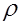

Поллард усули
Айтайлик, n – бўлувчиси катта бўлмаган жуфт мураккаб сон, Р – оркали n – соннинг энг кичик туб бўлувчисини белгилаймиз. Поллард усулининг мохияти ушбу бўлувчини топишдан иборат.
Алгоритм бажарилиш кетма-кетлиги куйидагидан иборат:
1. Айтайлик, z=[n1/4]+1, y=z2>n1/2.
2. n ва у! сонларининг энг кичик умумий карралисини топамиз:
ЭКУК(n, у!)=n*у! / ЭКУБ (n, у!)
3. Маьлумки у! сони берилган n сонининг энг
кичик туб бўлувчиси Р – га бўлинади, чунки Р  n1/2
< y.
n1/2
< y.
4. У холда берилган соннинг энг кичик туб бўлувчиси P – эканлиги жавоб килиб берилади.
Мисол. Куйидаги сонни: n=527 Поллард усулидан фойдаланиб, кўпайтувчиларга ажратинг.
Ечиш. Бевосита Ферма усулидан фойдаланиб кўрсатиш мумкинки:
527 = (24)2 – ( 7)2 = 17*31
Максад шу сонни туб кўпайтувчиларга ёйилмасини Поллард усули ёрдамида амалга оширишдан иборат. Хар бир кадамни кетма-кет бажариб чикамиз.
z = [n1/4]+1 = 4+1=5, y = z2 > n1/2 = 25
ЭКУБ( 527, 25!) =17,
ЭКУК (527, 25!) = 527*25!/ 17 = 31*25!
Демак, 25! Сонининг бўлинувчиси 17 бор. У холда
Р = 17, жавоб эса 527 = 17 b, b = 31, яьни 527 = 17*31.
Полларднинг 
Полларднинг усули 1975 йилда Дж.Поллард томонидан топилган бўлиб, бу усул оркали F8=2256+1 Ферма сонининг туб кўпайтувчилари аникланилган.
Айтайлик, n N сонини туб кўпайтувчиларга
ажратиш масаласи каралаётган бўлсин.
N сонини туб кўпайтувчиларга
ажратиш масаласи каралаётган бўлсин.
Ушбу усулнинг кадамлар кетма-кетлиги куйидагидан иборат:
1) f(x) – кўпхад даражаси икки ёки ундан катта бўлган, масалан f(x)=x2+1 деб олинади.
2)
Тасодифий х0 ZnZ
танланади.
ZnZ
танланади.
3) Бирор фиксирланган (маълум бўлган) j, k – номерлар учун куйидаги шартларнинг бажарилиши текширилади: 1<ЭКУБ(хj–xk; n)<n токи, n – сонининг туб кўпайтувчилари топилмагунча.
Бу ерда, агар j – сони 2h  j < 2h+1,
h
j < 2h+1,
h N бўлса, у холда k=2h-1
кўринишда олиш максадга мувофик.
N бўлса, у холда k=2h-1
кўринишда олиш максадга мувофик.
Мисол. n=728 сони туб кўпайтувчилари топилсин.
Ечиш. Тасодифий х0 ZnZ
– сони сифатида: х0=2, f(x)=x2+1 деб олинса, у холда xi
ZnZ
– сони сифатида: х0=2, f(x)=x2+1 деб олинса, у холда xi f(xi-1) (mod n); i=0, 1, 2, .... Яъни х0=2, х1=5,
х2=26, х3=677, ...
f(xi-1) (mod n); i=0, 1, 2, .... Яъни х0=2, х1=5,
х2=26, х3=677, ...
ЭКУБ (х1-х0; n)=ЭКУБ (3; 728)=1
Бу эса 3) шарт интервалига тегишли эмас. Шунинг учун бошка i – кийматларда хисоблашларни давом килдирамиз.
ЭКУБ (х2-х1; n) = ЭКУБ (21; 728) = 7;
Яъни 3) шарт интервалига тушди. Демак, 729:7=104. У холда битта туб кўпайтувчиси 7 экан.
Кейинги хисоблашларни n = 104 учун бажариш етарли.
ЭКУБ (х1-х0; n) = ЭКУБ (3; 104)=1, бу хол бажарилмайди;
ЭКУБ (х2-х1; n) = ЭКУБ (21; 104) =1; бу хол хам бажармади;
ЭКУБ (х3-х2; n) = ЭКУБ (651; 104) =1; бу хам бажармади;
ЭКУБ (х4-х3; n) = ЭКУБ (457653; 104) =1; бу хам бажармади;
Демак, бошка j, k – номерлар учун текширамиз: j = 2, k = 0; у холда ЭКУБ (х2-х0; n)=ЭКУБ (24; 104) = 8 ва 1<8<104 шарт бажарилди.
Натижада 104:8=13 бўлиб, бевосита текшириш мумкинки, 13 сони туб сон, жавоб эса 728 = 7*8*13 = 7*23*13.
Машклар. Куйидаги сонларнинг туб кўпайтувчиларини топинг:
1) 154731;
2) 6543;
3) 15443;
4) 91243.
5) 154221.